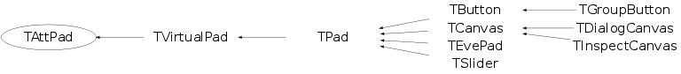

class TAttPad
Manages default Pad attributes. Referenced by TStyle.
Function Members (Methods)
public:
Data Members
protected:
| Float_t | fAfile | Alignment for the file name |
| Float_t | fAstat | Alignment for the statistics |
| Float_t | fBottomMargin | BottomMargin |
| Int_t | fFrameBorderMode | pad frame border mode |
| Width_t | fFrameBorderSize | pad frame border size |
| Color_t | fFrameFillColor | pad frame fill color |
| Style_t | fFrameFillStyle | pad frame fill style |
| Color_t | fFrameLineColor | pad frame line color |
| Style_t | fFrameLineStyle | pad frame line style |
| Width_t | fFrameLineWidth | pad frame line width |
| Float_t | fLeftMargin | LeftMargin |
| Float_t | fRightMargin | RightMargin |
| Float_t | fTopMargin | TopMargin |
| Float_t | fXfile | X position where to draw the file name |
| Float_t | fXstat | X position where to draw the statistics |
| Float_t | fYfile | Y position where to draw the file name |
| Float_t | fYstat | Y position where to draw the statistics |
Class Charts
{kind=link}
{kind=link}
{kind=link}
{kind=link}

Function documentation
void SetBottomMargin(Float_t bottommargin)
-*-*-*-*-*Set Pad bottom margin in fraction of the pad height *-* ===================================================
void SetLeftMargin(Float_t leftmargin)
-*-*-*-*Set Pad left margin in fraction of the pad width *-* ================================================
void SetRightMargin(Float_t rightmargin)
-*-*-*-*Set Pad right margin in fraction of the pad width *-* =================================================
void SetTopMargin(Float_t topmargin)
-*-*-*-*Set Pad top margin in fraction of the pad height *-* ================================================
void SetMargin(Float_t left, Float_t right, Float_t bottom, Float_t top)
*-*-*-*-*-*-*-*-*Set all margins
TAttPad()